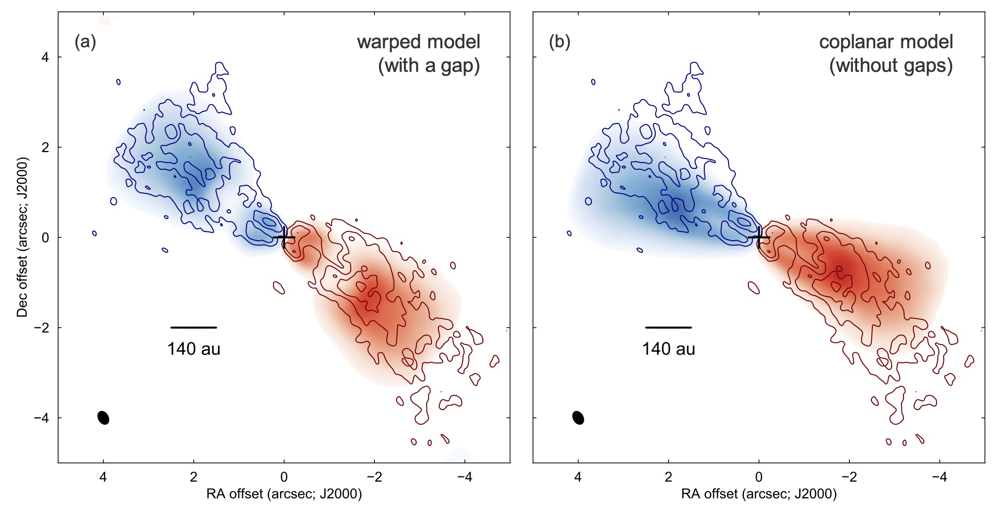
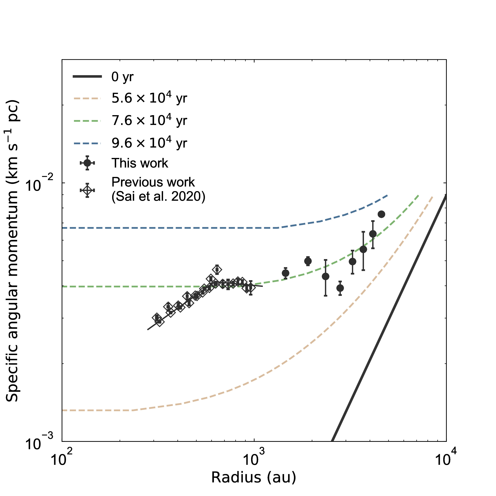

About Me
Hi, I am a postdoc fellow at Academia Sinica Institute of Astronomy and Astrophysics in Taiwan. My research interest is star and planet formation. I am particularly studying the gas kinematics around protostars with observations at (sub)millimeter wavelengths to understand physical process to form stars and planets.
Research
Stars and protoplanetary disks, which are disk-shape structures with a size of ~100 au surrounding the central star and the site for planet formation, are formed through gravitational collapse of dense cores with a size of ~10,000 au. Therefore, understanding gas kinematics in star-forming cores over a spatial scale from ~10,000 au down to ~100 au is necessary to reveal physical process of star and planet formation. I have been investigating the gas kinematics around protostars over such a wide spatial range with molecular line observations at (sub)millimeter wavelengths using radio interferometers and single dish telescopes.
Warped-Disk Structure around a Protostar
 Disk Structure around the Class I Protostar L1489 IRS Revealed by ALMA: A Warped-disk SystemI have observed the protostar L1489 IRS in C18O 2–1 with Atacama Large Millimeter/submillimeter Array (ALMA) in Chile, and studied the gas kinematics on ~100--1,000 au and its disk structure. It was found that the emission shape was warped at ~200–300 au and the rotational velocity follows Keplerian rotation within ~600 au in radius, suggesting a warped disk. A kinematic model of a wapred disk using RADMC-3D well reproduced the observations.
Specific Angular Momentum Profile over a Wide-Spatial-Range
 Which Part of Dense Cores Feeds Materials to Protostars?: The Case of L1489 IRSI have conducted observations of the protostar L1489 IRS in C18O 2–1 with the Atacama Compact Array (ACA) in Chile and the IRAM-30m telescope in Spain, and studied the gas kinematics on ~1,000–10,000 au scales. By comparing velocity structures between the observed map and disk-and-envelope models, I estimated the infalling and rotational velocity of the envelope. A radial profile of the specific angular momentum is calculated from the measured rotational velocity and compared with theoretical models of core collapse to discuss the mass and angular momentum transfer history.
Contact
E-mail: jn.insa.sai_at_gmail.com (Replace _at_ with @)